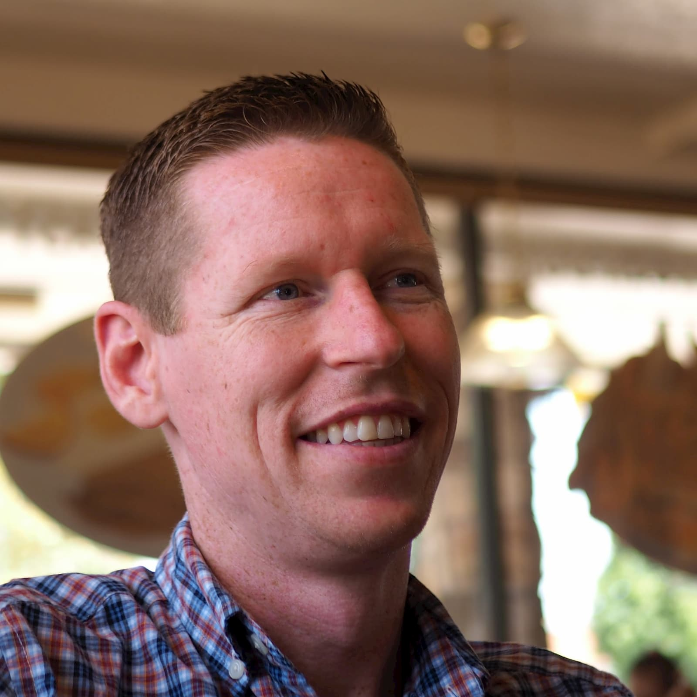

About Me
Web Developer with a relentless commitment to user experience. Full Stack Certificate in progress through University of Arizona Coding Boot Camp complemented by Responsive Web Design Certificate through Free Code Camp. Proficient in HTML, CSS, and JavaScript as well as modern web frameworks like React, Eleventy, Bootstrap, and jQuery. Eager to master new tools, techniques, and technologies to create robust, elegant solutions for customers, clients, and users. Recently learned and leveraged Node, Eleventy, and Flexbox to build a fast, responsive, personal JAM stack site. In team settings, I work to bring out the best in all team members whether I’m leading or in a supporting role. Drawing on my background in teaching, business leadership, and customer service, I approach each project with curiosity and empathy to deliver experiences that exceed expectations.